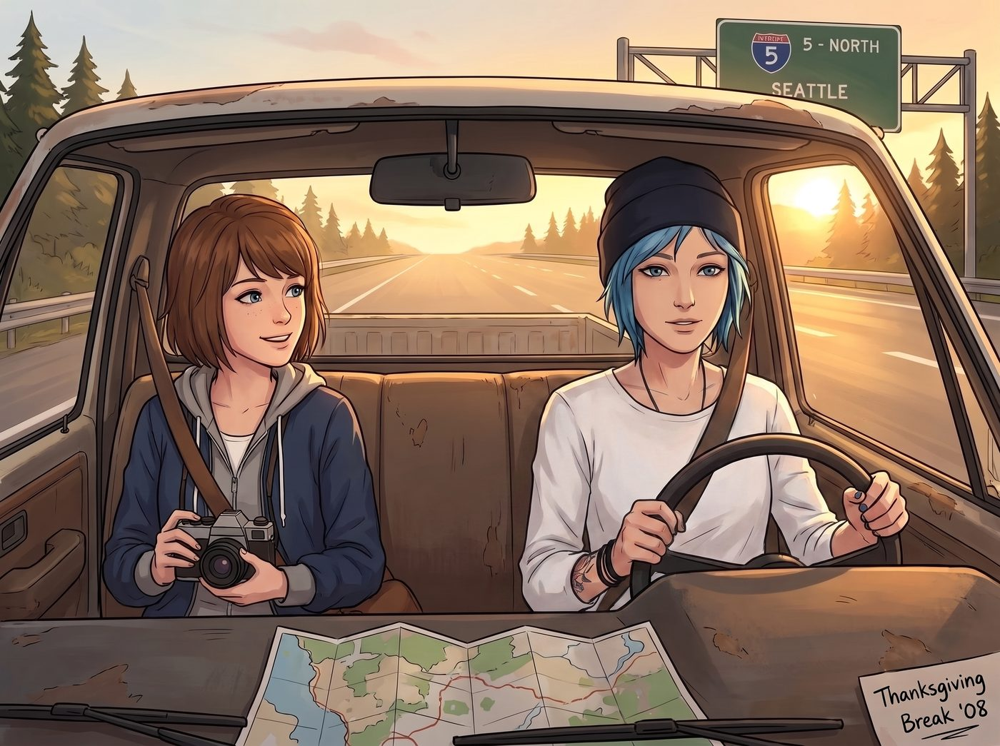

感恩節的西雅圖

十一月底的感恩節假期，工坊難得放了整整四天的長假。Chloe 開著那輛老皮卡，載著 Max，沿著五號州際公路一路向北，朝著西雅圖駛去——這是她第一次以「女朋友」的身份，正式踏進 Caulfield 家的大門。
一、見面前的野生柴油機偽裝戰
平時天不怕地不怕、敢把推土機拆了重裝的 Chloe，在見 Max 父母前罕見地陷入了全維度恐慌。
出發前一晚，她在自己那個塞滿工裝褲和骷髏T恤的衣櫃前抓狂了整整兩個小時，甚至試圖把那條穿了三年的破洞牛仔褲換掉，套上一件平時絕不可能碰的純白長袖襯衫。
隔天上路後，Chloe 一手握著方向盤，嘴裡神經質地反覆練習著不帶髒字的問候語：「你好 Caulfield 先生……今天天氣真不錯 Caulfield 太太……」練到一半突然崩潰地用另一隻手抱住頭，「靠，這聽起來像個推銷吸塵器的白痴！」
坐在副駕駛座上的 Max 忍不住笑出聲，伸手幫她把襯衫領子翻好，順勢按住她那隻還在方向盤上輕輕發顫的手：「放輕鬆，Chloe。我爸媽從小就認識妳，他們甚至還留著妳小時候掉進泥坑裡的照片呢。」
「那更可怕了！」Chloe 哀嚎一聲，「那些照片會不會在飯桌上被翻出來公開處刑？！」
二、見面現場：失而復得的擁抱
當皮卡停在西雅圖近郊那棟熟悉的獨棟房子前，Max 的父母 Ryan 和 Vanessa 已經站在門廊下等候多時。
門鈴還沒按響，Vanessa 就已經快步迎了上來。看到那個站在門口、手足無措、把藍色短髮梳得整整齊齊的姑娘，她甚至沒有多看一眼那截露出的手臂紋身，而是第一時間張開雙臂，像抱自己的親女兒一樣狠狠抱住了 Chloe。
「看看妳，Chloe……妳長成了一個這麼酷、這麼棒的姑娘。」Vanessa 的聲音有些哽咽，「這些年……妳吃了很多苦吧？」
這一句話，直接把 Chloe 準備了一整天的冷酷防禦瞬間擊碎。她整個人僵在原地，張了張嘴,卻一個字都說不出來，眼眶刷地一下就紅了。
Ryan 穿著格子襯衫，笑呵呵地走過來，手裡拎著一整箱精釀黑啤，用力拍了拍 Chloe 的肩膀：「聽 Max 說妳在波特蘭開了一間超厲害的重工業工坊？太棒了！待會兒吃完飯，妳得教教我怎麼修我那台老割草機的化油器，我被那玩意兒折磨了整整兩個夏天。」
沒有預想中的審視，沒有質疑的眼神，也沒有任何一句需要小心翼翼措辭的客套話——這場她準備了一整晚的「面試」，甚至還沒正式開始，就已經悄悄結束了。
三、餐桌上的反差萌與心結解開
感恩節晚宴的餐桌上，火雞、蔓越莓醬與南瓜派的香氣瀰漫了整個客廳。幾杯啤酒下肚後，原本緊繃的氣氛徹底變成了大型溫馨互損現場。
Vanessa 興沖沖地翻出一本泛黃的老相冊，指著小時候 Max 和 Chloe 扮成海盜、滿臉抹著番茄醬的合照哈哈大笑，讓 Max 羞得用手捂臉，Chloe 則笑得前仰後合，順勢從口袋裡掏出手機也翻出了幾張同款黑歷史反擊回去。
「Max 從小內向、走路都會被自己鞋帶絆倒，」Ryan 笑著跟 Chloe 碰了碰杯，語氣裡帶著真摯的感激，「有妳在她身邊護著她、陪她冒險，我和 Vanessa 在西雅圖比什麼都安心。」
一向不擅長肉麻表達的 Chloe，抓著後腦勺，結結巴巴卻無比認真地開口：「Caulfield 叔叔阿姨……應該是我謝謝你們。是 Max 把我從泥潭裡拉了出來……只要有我在，波特蘭就沒有任何人能欺負她。」
飯桌的另一頭，Max 靜靜看著這一幕，喉嚨忽然有些發緊。
她想起多年前那段搬到西雅圖後選擇沉默、選擇逃避的日子——那份積壓多年、關於「自己在安穩生活裡幸福，而 Chloe 卻獨自在阿卡迪亞灣受苦」的倖存者愧疚，此刻正被眼前這幅畫面一點點溫柔地熨平。原來父母從未真正遠離過那段過去，他們只是在等一個合適的時機，把這份遲來的關心與愛，一次性補還給 Chloe。
四、最溫暖的家庭拼圖
夜深了，客廳的壁爐劈啪作響。Vanessa 把一大包自製的蔓越莓乾和熱烘烘的肉桂捲塞滿了 Chloe 的雙手，並叮囑她們聖誕節一定要再回來。
臨走前，Ryan 特意把 Chloe 拉到門廊角落，壓低聲音，語氣少見地認真：「Chloe，我不知道妳這些年是怎麼一個人熬過來的。但從今天起，這個家的門永遠為妳開著，聽懂了嗎？」
Chloe 重重地點了點頭，喉結滾動了兩下，什麼話都沒能說出口。
站在夜色中的門廊下，Chloe 嘴裡嚼著肉桂捲，一隻手插在牛仔褲兜裡，另一隻手緊緊牽住身邊的 Max。皮卡的引擎聲響起，載著兩人重新駛向南方，駛回波特蘭那座屬於她們的鋼鐵家園。
那個曾經以為自己會永遠困在阿卡迪亞灣傷痛裡的問題少女，如今不僅早已跟 Joyce 與 David 重新找回了那份血濃於水的牽絆，此刻又在 Max 父母這份毫無保留的溫暖擁抱裡，讓「家」這個版圖，又悄悄地往外延伸出了新的一塊。